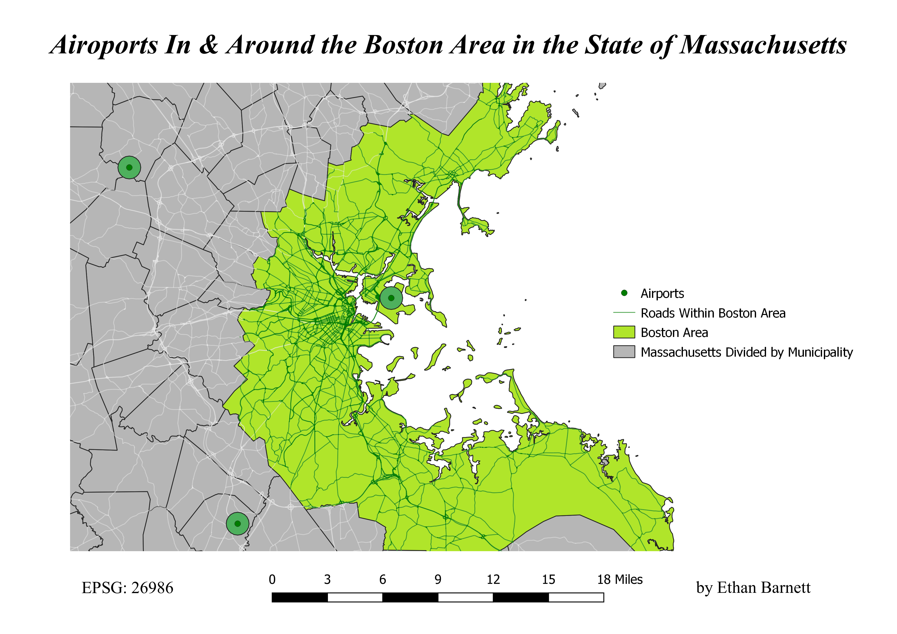

Homework 10: Airports In & Around the Boston Area in the State of Massachusetts
Ethan Barnett
The question I asked myself for this assignment was "How many airports are there in and around the Boston area, and how many different roads connect the airport/s to the city. The reason I wanted to ask this question is because when I moved back to the USA after years of growing up in South Africa, the Boston International Airport is the airport I landed at to start my new life here. I was interested in finding out if there were many other airports in the area. After using the vector data that I got from the State site, I came to the comclusion that there were only two other airports close to the area surrounding Boston. When I added the road vector, I found that there were a lot less roads leading to the airport than I had originally thought. I believe the reason for this is because the airport is on a little piece of land almost separated from the state itself. I found that after you travel along the road away from the airport that there is a very confusing network of roads that join the city and the surrouding areas. To geo-process, I used two different methods: A buffer for the airports, and two dissolves to separate the Boston area from the rest of the state and separate the roads in Boston from those outside of the area."

Data used for this project
Dissolve Geo-Processing Image
Airport Buffer Geo-Processing Image
Boston Roads Dissolve Geo-Processing Image
Website Used for Vector Data